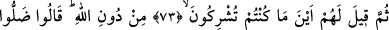
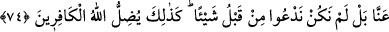
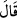
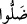
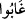
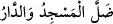

Bu sebepten Yüce Allah şöyle buyurdu: “Yüzleri haşlar.” (Kehf 18/29)
“Hamîm” mideye ulaşınca, midede ne varsa aşağıya iner. Hak Teâlâ şöyle buyurur:
“Onlara kaynar su içirilir ve bu su onların bağırsaklarını parça parça eder.”
(Muhammed 47/15)
O hamîm’den onların başlarına dökülür; derileri, etleri, sinirleri ve damarları
dökülür, yanmış kemik kalır. Şöyle nidâ gelir: “Ey Mâlik! Onların azâbını yenile. Zira
(azabı devamlı tatmaları için) ben onların bedenlerini devamlı yenileyeceğim.”
Şöyle denilmiştir: Mü’min olup da asî olanlar için cehennemde şu on şey yoktur:
Yüzleri kararmaz. Gözleri mavi olmaz. Boyunlarında halka olmaz. Ellerinde zincir
bulunmaz. Ayaklarında bağ olmaz. Yılan ve akrep sokması olmaz. Hamîm ve zakkûm
olmaz. Şeytan yaklaşmaz. Ümitsizlik olmaz. Ebedî ayrılık, dostluktan kesilme ve lânet
olmaz. Ateşin harâret ve yalazı onlara ulaşınca:
“Ey Ateş! Bana secde etmiş olanların yüzlerinden geri çekil! Onların secdegâhlarına
dokunmak yok!” denilir.
Allahım! Bizleri ateşinden koru. Biz dâimâ senin yakınlığına sığınmaktayız.
73, 74. Sonra onlara: Allah’ı bırakıp da koştuğunuz ortaklar nerededir?
denilecek. Onlar da: Bizden uzaklaştılar, meğer biz önceleri hiçbir şeye
tapmıyormuşuz, diyecekler. İşte Allah kâfirleri böyle şaşırtır.
Yakıldıktan “sonra onlara” kınayıp başlarına vurma yollu, dünyada iken “Allah’ı
bırakıp da” şefâatlerini ümit ederek “koştuğunuz ortaklar,” putlar “nerededir?
denilecek.” Haydi, çağırın da size şefâat edip yardım etsinler! Bu ifâde de azabın bir
parçasıdır. Burada gelecek zaman yerine “__WORD__” şeklinde mâzî sîgasının kullanılması,
bunun kesinlikle gerçekleşeceğini göstermek içindir.
Her ne kadar yok olup gitmemişlerse de, varsalar da “bizden” yâni gözlerimizin
önünden “uzaklaştılar.” “__WORD__, “__WORD__ anlamında olup Arapların yerleri bilinmeyen ev
ve mescidler için kullandıkları “__WORD__ ifadesinden gelmektedir. Hâlâ ayakta
olsa da, henüz helâk olmamışsa da “bulunamayan yerler” de böyledir.
Bu, onlar henüz putlarıyla karşılaştırılmazdan evvelki bir konuşmadır. Çünkü
cehennem ateşi içinde çok sayıda yer ve çeşitli tabakalar vardır. Dolayısıyla putların
varlığını îmâ eden şu âyet-i kerîme ile bunun arasında hiçbir çelişki yoktur: “Şuna
emin olun ki siz de Allah’ın yanı sıra taptıklarınız da birer cehennem
odunusunuz!” (el-Enbiyâ 21/98)